Let  be a substructure of
be a substructure of  . It is an
elementary substructure, written
. It is an
elementary substructure, written
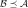
, if for every formula and every assignment
and every assignment  with values
in
with values
in  ,
,
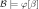
if and only if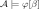
. Two structures are elementarily equivalent if they satisfy the same sentences.
Let be a substructure of . Then
if and only if: for every formula
, every assignment into and every variable
 , if
, if ![\(\mathcal{A}\models\exists x\,\varphi[\beta]\)](m/1ecc5f099e40091003f6fb65e25ff3d910ec8a2c.svg) then some
then some
 witnesses it in .
witnesses it in .
Necessity: if and
, then
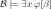
, so some
satisfies in , hence in by
elementarity.
Sufficiency: induct on . Atomic formulas agree because
is a substructure, and the cases of
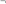
and are immediate from the induction hypothesis. For
are immediate from the induction hypothesis. For
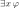
: if then a witness in satisfies in , hence
in by induction, so
. Conversely, if
, the hypothesis provides
a witness with  at
at  , and
by induction
, and
by induction 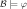
at; hence
.
Let  be a countable language, an -structure
and
be a countable language, an -structure
and
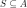
countable. Then has a countable
elementary substructure containing  .
.
There are countably many formulas, since each is a finite string over a
countable alphabet and the finite strings over a countable alphabet form
a countable union of countable sets. Fix a choice function on the
non-empty subsets of  .
.
Define
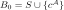
, a countable set (take any point of if is empty and there are no constants), and
recursively let 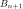
be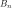
together with: the values of every function symbol on tuples from ; and, for every formula, every variable and every assignment taking
values in and differing from a fixed default at finitely many
variables, a chosen witness in for
whenever that holds.
Each stage adds countably many elements – countably many formulas,
countably many function symbols, countably many relevant assignments,
each contributing at most one element – so is countable by
the countable union theorem.
Let
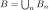
, countable for the same reason. It is closed under the function symbols and contains the constants, so it is the domain of a substructure; and it satisfies the Tarski-Vaught condition, because a formula with parameters in has them in some
, where a witness was added at stage  . Hence
, and
. Hence
, and 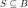
.
Let be an infinite -structure and  any set.
Then there is a structure elementarily equivalent to
whose domain has a subset in bijection with .
any set.
Then there is a structure elementarily equivalent to
whose domain has a subset in bijection with .
Let  be with a new constant
be with a new constant  for each
for each  ,
and let
,
and let  be the set of -sentences true in
together with all sentences
be the set of -sentences true in
together with all sentences
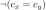
for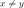
. A finite subset of mentions finitely many new constants; since
is infinite, distinct elements can be assigned to them,
so with those interpretations is a model of that finite
subset. By compactness has a model  ; its reduct to
satisfies exactly the sentences true in , and
; its reduct to
satisfies exactly the sentences true in , and
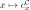
is injective.Applied to a countable axiomatisation of set theory, the downward theorem produces a countable model of it – inside which some set is provably uncountable. That is Skolem's paradox, and it is not a contradiction: "uncountable" means the model contains no bijection with its own natural numbers, and the missing bijection exists outside it. The lesson is exactly the one both theorems teach: a first-order theory constrains its models only up to what finitely many symbols can say.